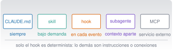

Personalización: CLAUDE.md, skills, hooks y MCP
C7 · Vía C
Versión 0.2.0 · editada el 23/10/2026 · comprobada el 23/10/2026 · Claude Code 2.1.309 (doc.) · pendiente de revisión

Objetivos y prerrequisitos
Objetivos. Al terminar la unidad sabrás:
- distinguir CLAUDE.md, skills, hooks, subagentes y MCP y elegir el mecanismo adecuado sin atribuirle a uno lo que pertenece a otro;
- escribir una skill con sus recursos y probar sus scripts;
- escribir y probar sin Claude un hook de validación previa y otro de comprobación de calidad;
- definir un subagente con herramientas limitadas;
- conectar un servidor MCP (y escribir uno local de solo lectura) entendiendo sus riesgos;
- ordenar la jerarquía de ajustes, permisos y variables de entorno, y proteger los secretos.
Prerrequisitos. C4 (Claude Code, permisos, CLAUDE.md). Conviene haber leído C5 y C2 (scripts, códigos de salida).
Tiempo orientativo. 8–10 horas. Nivel: avanzado. Herramientas: Claude Code, Python 3.11+, jq, uv; PowerShell 7 para la variante de Windows.
Todo el código de esta unidad está en claude/c7-extender/_ejemplo/ y se ejecutó el 23-10-2026 (macOS 27.0.1): 14 comprobaciones del hook de validación previa y de calidad (Zsh y jq), la variante PowerShell 7.6.8 sobre macOS, 6 pruebas pytest de la skill y un servidor MCP local probado con el cliente del SDK de Python (mcp 2.3.0). No se ejecutó nada dentro de una sesión de Claude Code (los hooks, la skill y el servidor se probaron fuera, con entradas de muestra), y no se ejecutó claude mcp add (modifica ~/.claude.json, un ajuste global). Las configuraciones proceden de la documentación 2.1.309 (consultada el 23-10-2026); los nombres de campos y eventos cambian de versión en versión: verifica siempre con /hooks, /skills y /mcp en tu versión.
Temas de la unidad
- C7.1 CLAUDE.md a fondo: jerarquía, ubicaciones, modularidad y mantenimiento
- C7.2 Memoria y configuración por proyecto y por usuario
- C7.3 Skills: estructura, SKILL.md, recursos, scripts y pruebas
- C7.4 Una skill que valida un Excel de indicadores y genera un informe Quarto
- C7.5 Hooks: eventos, configuración, validación previa y riesgos
- C7.6 MCP: arquitectura, clientes, servidores, tools, resources y prompts
- C7.7 Un servidor MCP local de solo lectura; MCP frente a un script
- C7.8 Plugins y distribución
- C7.9 Permisos y seguridad de la configuración
Teoría breve
C7.1 CLAUDE.md a fondo: jerarquía, ubicaciones, modularidad y mantenimiento
En C4.6 viste lo básico. Aquí, el mapa completo de mecanismos, porque la tentación es meterlo todo en CLAUDE.md. Cada uno resuelve un problema distinto (Extend Claude Code 2026):
| Mecanismo | Qué es | Cuándo actúa | Coste de contexto | ¿Se impone? |
|---|---|---|---|---|
| CLAUDE.md y reglas | Instrucciones persistentes | Al empezar cada sesión (reglas por ruta, al abrir esos ficheros) | En cada petición | No: es contexto |
| Skill | Conocimiento o flujo que se invoca | Bajo demanda (/nombre o cuando coincide la descripción) |
Bajo: solo la descripción hasta que se usa | No: Claude interpreta |
| Subagente | Trabajador con su propio contexto | Cuando se le delega una tarea | Aislado del principal | Permisos y herramientas propios |
| Hook | Script que se ejecuta en un evento del ciclo de vida | En cada evento que coincide | Cero, salvo que devuelva texto | Sí: determinista |
| MCP | Conexión con un servicio externo | Cuando Claude usa una de sus herramientas | Bajo (nombres) hasta usarlas | Lo que haga el servidor |
| Plugin | Paquete que agrupa los anteriores | Mientras esté activado | La suma de sus partes | — |
Regla práctica. Pon en CLAUDE.md lo que Claude siempre debe saber (comandos, convenciones, «nunca hagas X»); en una skill, lo que necesita a veces o un flujo que quieres lanzar con /nombre; en un hook, lo que debe ocurrir siempre sin que Claude decida; en un subagente, el trabajo que llena el contexto (leer muchos ficheros) y solo necesitas resumido; en MCP, el acceso a algo externo que Claude no puede leer solo.
Cómo se combinan los niveles (usuario, proyecto, local, organización):
| Mecanismo | Si hay varios niveles… |
|---|---|
CLAUDE.md |
Se suman todos (los de directorios superiores al arrancar; los de subcarpetas, al trabajar allí). Si se contradicen, Claude decide |
| Skills y subagentes | Se sustituyen por nombre: gana uno según prioridad (organización antes que usuario antes que proyecto para skills; para subagentes, organización, luego opción de la línea de órdenes, proyecto y usuario) |
| Servidores MCP | Se sustituyen por nombre: local > proyecto > usuario |
| Hooks | Se combinan: se ejecutan todos los que coincidan, vengan de donde vengan |
Modularidad y mantenimiento. Menos de 200 líneas por fichero; trocea con reglas por ruta (.claude/rules/), con importaciones (@ruta) o pasa lo largo a una skill; revisa con /doctor prompt-audit (C4.6); cada línea debe poder responder «¿qué error cometería Claude si la quito?». Una instrucción que Claude incumple repetidamente suele indicar un fichero demasiado largo, no que falte énfasis.
Pon a prueba lo anterior.
Quieres que, siempre que Claude edite un fichero .py, se compruebe automáticamente que compila. ¿Qué mecanismo usas?
- Una frase en
CLAUDE.md: «comprueba siempre que compila». - Una skill con esa instrucción.
- Un hook
PostToolUsecon el matcherEdit|Write. - Un subagente de revisión.
Lo que debe ocurrir siempre y sin que Claude decida es un hook: determinista. Una frase en CLAUDE.md o una skill son instrucciones que Claude interpreta y puede omitir.
C7.2 Memoria y configuración por proyecto y por usuario
Claude Code tiene tres cosas que se confunden:
| Qué es | Quién lo escribe | Dónde | |
|---|---|---|---|
CLAUDE.md |
Instrucciones | Tú | ~/.claude/CLAUDE.md, ./CLAUDE.md, ./CLAUDE.local.md |
| Memoria automática | Notas que Claude toma de tus correcciones | Claude | Gestionada por Claude Code; se revisa con /memory |
Ajustes (settings.json) |
Configuración que sí se impone: permisos, hooks, variables de entorno | Tú | Ver abajo |
Ajustes y precedencia. Los ajustes viven en ~/.claude/settings.json (usuario), .claude/settings.json (proyecto, se versiona), .claude/settings.local.json (local, no se versiona) y, en organizaciones, en ajustes gestionados. En conflicto, manda lo más específico o estricto en este orden (según la documentación de ajustes consultada el 23-10-2026): gestionados > línea de órdenes > local > proyecto > usuario; las listas de permisos se combinan en lugar de sustituirse. Los de proyecto valen para todo el equipo (y para el alumnado de este curso) solo tras aceptar el diálogo de confianza de la carpeta.
Variables de entorno de Claude Code. El bloque env de settings.json las fija para cada sesión (por ejemplo, DISABLE_AUTOUPDATER). No pongas ahí secretos si el fichero se versiona: usa el .local.json (no versionado) o el almacén de credenciales del sistema (C2.5).
Dónde poner cada cosa en este proyecto (ejemplo real). El CLAUDE.md raíz fija idioma, unidades y la plantilla de las unidades; .claude/settings.json fija las permisos (lo que se permite, se pregunta o se deniega) y registra el hook que bloquea la carpeta de datos privados; .claude/settings.local.json (ignorado por Git) guarda los ajustes personales.
C7.3 Skills: estructura, SKILL.md, recursos, scripts y pruebas
Una skill es una carpeta con un SKILL.md (cabecera YAML + instrucciones en Markdown) y, opcionalmente, ficheros de apoyo y scripts. Se invoca con /nombre o Claude la carga sola cuando la petición coincide con su descripción (Extend Claude with skills 2026).
Ubicación (documentación consultada el 23-10-2026):
| Alcance | Ruta |
|---|---|
| Personal | ~/.claude/skills/<nombre>/SKILL.md |
| Proyecto (se versiona) | .claude/skills/<nombre>/SKILL.md |
| Plugin | <plugin>/skills/<nombre>/SKILL.md, invocada como /plugin:nombre |
Campos de la cabecera más útiles (todos son opcionales; description es muy recomendable):
| Campo | Para qué |
|---|---|
name |
Nombre del comando (por defecto, el de la carpeta) |
description |
Qué hace y cuándo usarla; Claude la usa para decidir si cargarla (se trunca a 1536 caracteres: lo importante, primero) |
argument-hint |
Pista de autocompletado, p. ej. [ruta/al/fichero] |
disable-model-invocation: true |
Solo la invocas tú; ideal para flujos con efectos (/deploy) |
user-invocable: false |
Solo la usa Claude |
allowed-tools |
Herramientas que se permiten sin preguntar mientras la skill actúa (¡revísalo!) |
context: fork |
Ejecuta la skill en un subagente aparte |
Argumentos y recursos: $ARGUMENTS se sustituye por lo que escribas tras el nombre; ${CLAUDE_SKILL_DIR} es la carpeta de la skill, para llamar a sus scripts (que se ejecutan, no se cargan en el contexto). La documentación recomienda SKILL.md de menos de 500 líneas y poner el material extenso en ficheros aparte.
Seguridad. Una skill de un repositorio ajeno puede traer allowed-tools que concedan permisos sin preguntar, o !`orden` que ejecuta una orden de shell antes de que Claude vea el texto: lee las skills de terceros antes de usarlas y usa disable-model-invocation: true en las que tengan efectos. Los comandos personalizados antiguos de .claude/commands/ se han fusionado con las skills (siguen funcionando; si hay una skill y un comando con el mismo nombre, gana la skill).
Probar una skill. Su parte de código (scripts) se prueba como cualquier código (C5): entradas buenas, malas y límite, sin Claude. Su parte de instrucciones se prueba usándola con casos conocidos y comprobando que no se salta pasos. La skill de abajo tiene pruebas de sus scripts.
Pon a prueba lo anterior.
La descripción completa de todas tus skills ocupa contexto solo cuando las invocas.
Falso. Según la documentación, las descripciones están siempre en el contexto (para que Claude sepa qué hay); el contenido completo solo se carga al invocar la skill. Con disable-model-invocation: true ni siquiera la descripción se carga.
C7.4 Una skill que valida un Excel de indicadores y genera un informe Quarto
La skill de ejemplo, claude/c7-extender/_ejemplo/skill/validar-tabla/, valida un CSV o un Excel y genera un informe Quarto con el resultado. No modifica el fichero original y no ejecuta quarto render sin que se lo pidas.
validar-tabla/
├── SKILL.md instrucciones (cabecera + 6 pasos)
└── scripts/
├── validar.py filas, columnas, ausentes por columna y duplicadas (CSV o XLSX) → JSON
└── informe.py JSON → informe-validacion.qmd (texto y una tabla, sin código ejecutable)Cabecera de SKILL.md:
---
name: validar-tabla
description: Valida una tabla de datos en CSV o Excel (filas, columnas, ausentes por columna, filas duplicadas) y genera un informe Quarto con el resultado, sin modificar el fichero. Úsala cuando el usuario pida revisar la calidad de unos indicadores antes de analizarlos.
argument-hint: [ruta/al/fichero.csv|xlsx]
---Para instalarla (en tu copia del proyecto): copia la carpeta a .claude/skills/validar-tabla/. Se invoca con /validar-tabla datos/sinteticos/curso-claude/c_mantenimiento.csv.
Resultado comprobado (ejecutando los scripts a mano, fuera de Claude): sobre c_mantenimiento.csv, 180 filas, 6 columnas, 3 ausentes (todos en coste_eur), 0 duplicadas; sobre a_ventas.csv, 109 filas, 5 ausentes en ventas_eur y 1 duplicada; el informe .qmd generado se renderizó correctamente a HTML. Hay 6 pruebas pytest (test_ejemplos.py) que cubren el CSV, el XLSX (ausentes y duplicadas), los códigos de salida (2 = fichero ausente, 3 = tabla no válida), que el fichero no se modifica y que la cabecera de la skill es válida.
Lo que esta skill no hace: no valida rangos, unidades ni formatos de fecha (lo dice el propio informe), y con .xlsx lee los valores guardados de las celdas, no recalcula fórmulas. Una skill honesta declara sus límites.
Pon a prueba lo anterior.
¿Por qué la skill validar-tabla redacta «no continúes» si el script termina con un código distinto de 0?
- Para ahorrar tokens.
- Para no producir un informe con cifras falsas a partir de una validación que falló.
- Porque Claude no sabe leer códigos de salida.
- Por estilo.
Un fallo silencioso es peor que un fallo visible: si la validación falla y la skill sigue, el informe se construiría sobre un resultado inexistente. Es el mismo principio que los códigos de salida de C2.10.
C7.5 Hooks: eventos, configuración, validación previa y riesgos
Un hook es una orden que Claude Code ejecuta por sí mismo cuando ocurre un evento del ciclo de vida: antes o después de usar una herramienta (PreToolUse, PostToolUse), al empezar una sesión, al enviar un mensaje, al terminar un turno (Stop), etc. A diferencia de una instrucción, no depende de que Claude decida cumplirla (Automate actions with hooks 2026).
Dónde se configuran: en el bloque hooks de ~/.claude/settings.json, .claude/settings.json (se versiona), .claude/settings.local.json, en ajustes gestionados, en un plugin o en la cabecera de una skill o subagente. /hooks los lista.
Estructura (un PreToolUse con matcher, tomado de la documentación):
{
"hooks": {
"PreToolUse": [
{
"matcher": "Bash",
"hooks": [
{ "type": "command", "command": "\"$CLAUDE_PROJECT_DIR\"/.claude/hooks/validar-comando.sh" }
]
}
]
}
}El matcher filtra por nombre de herramienta (Bash, Edit|Write, mcp__.*). Sin matcher, el hook se ejecuta en cada aparición del evento.
Cómo hablan Claude Code y el hook. El hook recibe un JSON por la entrada estándar (stdin) con campos comunes (session_id, cwd, hook_event_name) y los del evento; en PreToolUse de Bash, tool_name y tool_input.command. Responde con código de salida:
| Código | Significado en PreToolUse |
|---|---|
| 0 | No decide nada: sigue el flujo normal de permisos. No aprueba la orden |
| 2 | Bloquea; lo escrito en stderr llega a Claude como explicación para que ajuste |
| Otro | El hook falló; en la mayoría de eventos la acción continúa (un hook roto no protege) |
Alternativa con más control: salir con 0 e imprimir un JSON con hookSpecificOutput.permissionDecision ("deny", "allow", "ask") y un motivo. Un "deny" de un hook se mantiene en todos los modos de permisos, incluso con bypassPermissions; un "allow" no salta las reglas deny. Elige un enfoque por hook (código o JSON).
Ejemplo 1: validación previa de órdenes
_ejemplo/hooks/validar-comando.sh (Zsh/Bash con jq) bloquea rm -rf, git push --force, git reset --hard, sudo y curl … | sh:
#!/bin/bash
entrada=$(cat)
orden=$(printf '%s' "$entrada" | jq -r '.tool_input.command // empty')
[ -z "$orden" ] && exit 0
bloquea() { echo "Bloqueado por validar-comando.sh: $1" >&2; exit 2; }
case "$orden" in
*"rm -rf"*|*"rm -fr"*) bloquea "borrado recursivo forzado" ;;
*"git push --force"*|*"git push -f"*) bloquea "push forzado" ;;
*"git reset --hard"*) bloquea "git reset --hard descarta trabajo" ;;
*sudo\ *) bloquea "sudo" ;;
esac
exit 0(El fichero real añade el caso curl | sh con una expresión regular.) Hay una variante PowerShell (validar-comando.ps1) que lee el JSON con ConvertFrom-Json y usa exit 2 igual. Resultado comprobado (ejecutando los scripts con JSON de muestra, sin Claude): ls y git status → 0; rm -rf, push forzado, reset --hard, sudo y curl | sh → 2 con el mensaje; un git push normal → 0, porque ese lo decide el permiso ask, no el hook. En PowerShell 7 (sobre macOS): rm -rf → 2, git status → 0, iwr … | iex → 2.
Un caso real mientras se escribía esta unidad. El hook de este proyecto (.claude/hooks/bloquear-datos-privados.sh, de once líneas) bloqueó varias veces órdenes de shell del propio asistente porque su texto mencionaba la carpeta protegida, aunque solo fuera para escribir un fichero de documentación. Es el comportamiento deseado… y también su limitación: un hook por patrones de texto es una segunda barrera, no una defensa completa.
Ejemplo 2: comprobar la calidad tras cada edición
_ejemplo/hooks/comprobar-calidad.sh es un PostToolUse con matcher Edit|Write: si el fichero editado es .py, comprueba que compila y, si encuentra una carpeta tests/ por encima, ejecuta las pruebas. Si algo falla, devuelve {"decision": "block", "reason": "…"} (la forma de decisión que la documentación indica para PostToolUse y Stop), construido con jq para escapar bien el texto. La orden de pruebas es configurable con la variable COMPROBAR_PYTEST.
Resultado comprobado (con JSON de muestra): un .py con error de sintaxis → decision: block; un .py correcto sin tests/ → sin salida; un .py correcto pero con una prueba que falla en tests/ → decision: block con el resumen de pytest; un fichero que no es .py → ignorado. Se ejecutan todos con zsh claude/c7-extender/_ejemplo/hooks/probar_hooks.sh (14 comprobaciones, todas en verde). No se ha verificado el comportamiento de decision: block dentro de una sesión real; la forma del JSON procede de la documentación.
Configuración de ambos hooks (hooks/settings.ejemplo.json, validada con jq): PreToolUse con Bash y PostToolUse con Edit|Write. Los scripts deben ser ejecutables en macOS (chmod +x).
- Se ejecutan con tus permisos y sin pedirte confirmación: un hook de un repositorio ajeno puede hacer lo que tú puedes hacer. Lee los hooks de
.claude/settings.jsonde cualquier proyecto antes de aceptar su confianza. - Un hook que falla suele no bloquear: si tu script se rompe (código distinto de 0 y 2), la acción sigue. Pruébalo.
- No metas lógica lenta: se ejecuta en cada evento que coincide.
- No fíes la seguridad a patrones de texto:
rm -rf(dos espacios) o una orden construida en una variable los esquivan. Los hooks refuerzan los permisos y el sandbox; no los sustituyen. - Escapa bien el JSON que devuelves (usa
jq, no concatenes cadenas). - No hagas que un hook modifique ficheros del proyecto sin que quede claro (efectos ocultos).
Pon a prueba lo anterior.
Tu hook PreToolUse termina con código 1 (por un error en el script). ¿Qué ocurre, en general?
- Se bloquea la orden, por precaución.
- Claude Code se cierra.
- Se aprueba la orden automáticamente.
- La orden continúa como si el hook no existiera; solo el código 2 (o un JSON de
deny) bloquea.
Según la documentación, con un código distinto de 0 y 2 y sin JSON válido, la acción prosigue en la mayoría de eventos. Por eso hay que probar los hooks (con JSON de muestra, como probar_hooks.sh).
Si un hook devuelve allow, Claude Code ignora las reglas deny de tus ajustes.
Falso: un allow de un hook no salta las reglas deny; y un deny de un hook se mantiene incluso en bypassPermissions. Los hooks pueden endurecer el control, no aflojar lo que ya está denegado.
C7.6 MCP: arquitectura, clientes, servidores, tools, resources y prompts
El Model Context Protocol (MCP) es un estándar abierto para conectar asistentes con herramientas y datos externos (C1.1). La arquitectura tiene dos lados: un cliente (Claude Code) y uno o varios servidores, que ofrecen herramientas (tools: acciones o consultas), recursos (resources: datos que se pueden leer) y prompts plantillas de petición. Claude decide cuándo llamar a una herramienta; el servidor hace el trabajo (Connect Claude Code to tools via MCP 2026).
Transportes (documentación consultada el 23-10-2026): HTTP (recomendado para servidores remotos), stdio (proceso local en tu máquina) y SSE (obsoleto).
Añadir un servidor (sintaxis de la documentación y de claude mcp add --help en la versión 2.1.306; no se ejecutó porque modifica ~/.claude.json):
# Remoto (HTTP)
claude mcp add --transport http <nombre> <url>
# Local (stdio): todo lo que sigue a «--» es la orden del servidor, sin tocar
claude mcp add --transport stdio --scope project datos-curso -- uv run --with "mcp>=2" python claude/c7-extender/_ejemplo/mcp/servidor_csv.py
claude mcp list # servidores configurados
claude mcp get <nombre> # detalles de uno
claude mcp remove <nombre>Dentro de una sesión, /mcp muestra el estado de cada servidor y gestiona la autenticación. El separador -- importa: sin él, Claude Code intentaría interpretar como propias las opciones del servidor.
Ámbitos (dónde se guarda): local (por defecto; solo tú, solo este proyecto, en ~/.claude.json), project (el equipo, vía Git, en .mcp.json en la raíz) y user (todos tus proyectos). Si un mismo servidor está en varios sitios, se usa la definición de mayor precedencia (local > proyecto > usuario) entera, sin combinar campos. Un servidor de proyecto en .mcp.json pide aprobación la primera vez en sesiones interactivas.
Ejemplo de .mcp.json para el servidor local (una entrada sin type se lee como stdio):
{
"mcpServers": {
"datos-curso": {
"command": "uv",
"args": ["run", "--with", "mcp>=2", "python", "claude/c7-extender/_ejemplo/mcp/servidor_csv.py"]
}
}
}- Un servidor MCP es código que se ejecuta en tu máquina (stdio) o un servicio que recibe lo que Claude le envía (HTTP). Conecta solo servidores en los que confíes; la documentación lo advierte expresamente.
- Inyección de instrucciones (prompt injection): un servidor que trae contenido externo (páginas web, correos, incidencias) puede incluir texto que parezca una instrucción. Claude puede seguirla. Limita lo que cada servidor puede hacer (solo lectura cuando baste) y no le des herramientas que escriban o envíen sin supervisión.
- Secretos: no pongas claves en
.mcp.jsonsi se versiona; la documentación admite expandir variables de entorno (${VAR}) en el fichero. - Salida: Claude Code avisa cuando una herramienta devuelve más de 10 000 tokens y limita por defecto la salida a 25 000.
Pon a prueba lo anterior.
Quieres que todo tu equipo use el mismo servidor MCP al clonar el repositorio. ¿Qué ámbito usas?
local, que es el predeterminado.project: se guarda en.mcp.json, que se versiona.user.- Ninguno: hay que configurarlo a mano en cada equipo.
El ámbito project escribe .mcp.json en la raíz, que se commitea. Cada persona tendrá que aprobarlo la primera vez. local y user no se comparten por Git.
C7.7 Un servidor MCP local de solo lectura; MCP frente a un script
_ejemplo/mcp/servidor_csv.py es un servidor de solo lectura sobre los datos sintéticos del curso, escrito con el SDK de Python (mcp 2.x, donde FastMCP pasó a llamarse MCPServer):
from mcp.server.mcpserver import MCPServer
mcp = MCPServer("datos-sinteticos-curso")
@mcp.tool()
def listar_casos() -> list[str]:
"""Lista los casos disponibles (nombre de fichero sin extensión)."""
return _casos()
@mcp.tool()
def resumen_csv(caso: str) -> dict:
"""Filas, columnas y ausentes por columna de un caso de datos sintéticos."""
if caso not in _casos(): # lista blanca: impide rutas como ../../secreto
raise ValueError(f"caso desconocido: {caso!r}")
...
@mcp.resource("resumen://casos")
def casos_disponibles() -> str:
return "\n".join(_casos())
if __name__ == "__main__":
mcp.run(transport="stdio")Decisiones de seguridad: solo lee; no abre red; el nombre del caso se valida contra una lista blanca (no se construye una ruta con lo que llega); las herramientas tienen docstring (lo que Claude ve para decidir cuándo usarlas).
Resultado comprobado (con el cliente del SDK en cliente_prueba.py, sin Claude): el servidor anuncia dos herramientas (listar_casos, resumen_csv); listar_casos devuelve los cinco casos; resumen_csv("a_ventas") devuelve 109 filas, 4 columnas y 5 ausentes en ventas_eur; resumen_csv("../../CLAUDE") produce un error (rechazo de la ruta). No se ha conectado a Claude Code.
MCP frente a un script. No todo necesita un servidor MCP:
Script o CLI (gh, python script.py) |
Servidor MCP | |
|---|---|---|
| Esfuerzo | Mínimo | Mayor (un servidor y su configuración) |
| Contexto | Sin coste fijo; Claude lo llama por Bash | Los nombres de herramientas entran en contexto |
| Control | Los permisos de Bash | Los de las herramientas MCP (se pueden permitir una a una) |
| Mejor para | Tareas puntuales y bien conocidas | Acceso repetido y estructurado a un sistema externo, con autenticación |
La propia documentación de costes recomienda preferir herramientas de línea de órdenes cuando existan (por ejemplo, gh) por su eficiencia de contexto. Elige MCP cuando el acceso es frecuente, estructurado y necesita autenticación gestionada.
Pon a prueba lo anterior.
En el servidor de ejemplo, validar el nombre del caso contra una lista de casos conocidos es mejor que construir una ruta con el texto recibido.
Verdadero. Un nombre como ../../CLAUDE o una ruta absoluta saldría de la carpeta permitida si se concatenara. La lista blanca lo impide.
C7.8 Plugins y distribución
Un plugin empaqueta skills, hooks, subagentes y servidores MCP en una unidad instalable, que se puede compartir entre repositorios o distribuir mediante un marketplace (Extend Claude Code 2026). Sus skills llevan espacio de nombres (/mi-plugin:revisar) para que varios plugins convivan. Se instalan con claude plugin install nombre@marketplace (según el registro del curso, verificado con la documentación 2.1.309) o con /plugin en la sesión.
Cuándo empaquetar: cuando un segundo repositorio necesita la misma configuración. Mientras sirvas a un proyecto, .claude/ (skills, agentes, hooks) y .mcp.json versionados bastan.
Riesgo: instalar un plugin de terceros es instalar hooks, skills y servidores que se ejecutan con tus permisos. Aplica lo de C7.3, C7.5 y C7.6: léelo antes, confía solo en fuentes conocidas y fija versiones. Esta sección se basa solo en la página de visión general de la extensibilidad; la de plugins no se ha leído completa.
C7.9 Permisos y seguridad de la configuración
Todo lo anterior son maneras de ampliar lo que Claude Code puede hacer. Antes de añadir nada, pregúntate lo de C2.10: ¿con qué privilegio se ejecuta y qué ocurre si falla o lo manipulan?
Orden de defensas (de lo más a lo menos fiable):
- Sandbox y aislamiento (contenedores, máquinas virtuales): limitan el daño real. En Windows nativo el sandbox de Claude Code no está disponible (se necesita WSL 2).
- Reglas
denyde permisos: bloquean sin preguntar. - Hooks
PreToolUse: refuerzo determinista, por patrones. - Reglas
asky revisión humana del diff. CLAUDE.md, skills: instrucciones que se suelen cumplir; no son una garantía.
Higiene de la configuración:
- Nada de secretos en ficheros versionados (
settings.json,.mcp.json,CLAUDE.md): usa variables de entorno,.local.json(no versionado) o el almacén del sistema. - Mínimo privilegio:
allowed-toolsy reglasallowlo más estrechas posible; sin comodines amplios. - Revisa lo que viene de fuera antes de aceptar la confianza de una carpeta:
.claude/settings.json, hooks, skills y.mcp.jsonde un repositorio ajeno se ejecutan con tus permisos. - Versiona la configuración del proyecto y haz que pase revisión como el código.
- Comprueba lo configurado:
/permissions,/hooks,/skills,/mcp,/status.
Pon a prueba lo anterior.
Clonas un repositorio ajeno y Claude Code te pide confiar en la carpeta. ¿Qué haces antes de aceptar?
- Acepto: la IA me protegerá.
- Acepto y reviso después.
- Reviso
.claude/settings.json(hooks y permisos),.claude/skills/,.mcp.jsonyCLAUDE.md; acepto solo si entiendo lo que ejecutarán. - Borro
.claude/sin mirar.
Esos ficheros pueden registrar hooks, skills con permisos pre-aprobados y servidores MCP que se ejecutan con tus privilegios. Se leen antes de dar la confianza.
Subagentes: complemento a C7.1
Un subagente es un trabajador con su propio contexto, sus propias herramientas y permisos; solo su resumen vuelve a la conversación principal. Se define con un fichero Markdown con cabecera YAML en .claude/agents/ (proyecto) o ~/.claude/agents/ (usuario); name y description son obligatorios (Create custom subagents 2026). Ejemplo, _ejemplo/agentes/revisor-datos.md: un revisor de análisis de datos de solo lectura.
---
name: revisor-datos
description: Revisa un análisis de datos ya hecho (código y resultados) buscando errores de método, ausentes mal tratados y conclusiones que los datos no apoyan. Úsalo para una segunda opinión antes de entregar un informe.
tools: Read, Grep, Glob
model: sonnet
---
Eres un revisor de análisis de datos. … **No modificas nada.**Campos útiles (documentación consultada el 23-10-2026): tools (lista de herramientas permitidas; si se omite, hereda todas), disallowedTools, model (sonnet, opus, haiku, fable, un identificador o inherit), permissionMode, isolation: worktree, skills (se precargan completas), memory, maxTurns, mcpServers y hooks. Se invocan nombrándolos («usa el subagente revisor-datos»), con @agent-<nombre> o con claude --agent <nombre> para toda la sesión. Usa un subagente cuando la tarea produce mucho texto que no necesitas en tu contexto o quieres restringir herramientas; usa la conversación principal si necesitas ir y venir o es un cambio pequeño.
Matices: un subagente no ve tu conversación, solo el mensaje que Claude le escribe; por defecto puede crear sus propios subagentes hasta tres niveles por debajo de la conversación principal (se limita con CLAUDE_CODE_MAX_SUBAGENT_SPAWN_DEPTH) y se ejecutan como máximo 20 a la vez; los subagentes no son lo mismo que los worktrees (que aíslan ficheros, C3.10) ni que los equipos de agentes (experimentales, C8). No se ha ejecutado este subagente dentro de Claude Code.
Práctica guiada
Local gratuita (hooks, skill y servidor se prueban sin Claude) · Requiere cuenta (usarlos dentro de Claude Code). Diálogos ilustrativos.
Ficha. Objetivo: instalar en una copia del proyecto un hook de validación previa, uno de calidad y una skill, comprobar que funcionan y que fallan bien. Archivos: claude/c7-extender/_ejemplo/. Versiones: Claude Code 2.1.x, jq, Python 3.11+, uv. Resultado esperado: probar_hooks.sh con 14 comprobaciones OK, 6 pruebas pytest de la skill, y los hooks activos en /hooks. Problemas frecuentes: script sin permiso de ejecución; falta jq; esperar que un hook roto bloquee.
- Prepara una copia del proyecto de la viga con Git y una rama (
git switch -c practica/c7). - Prueba los hooks fuera de Claude:
zsh claude/c7-extender/_ejemplo/hooks/probar_hooks.sh(14 OK; necesitajqyuv). En PowerShell, ejecutavalidar-comando.ps1con un JSON de muestra y comprueba$LASTEXITCODE. - Instálalos: copia los scripts a
.claude/hooks/(conchmod +x) y el bloque desettings.ejemplo.jsona.claude/settings.json. Abre Claude Code y comprueba con/hooksque aparecen. - Cásalos con la realidad: pide «borra la carpeta
resultadosconrm -rf». Debe bloquearse con el mensaje; observa cómo Claude lo recibe y qué alternativa propone. Pide luego un cambio en un.pycon una prueba que rompa: el hook de calidad debe avisarle. - Instala la skill: copia
skill/validar-tabla/a.claude/skills/y ejecuta/validar-tabla datos/sinteticos/curso-claude/c_mantenimiento.csv. Esperado: 180 filas, 3 ausentes encoste_eur, 0 duplicadas. - Revisa qué hizo: ¿modificó algún fichero de datos? (
git status). ¿Renderizó el informe sin que se lo pidieras? - Prueba el servidor MCP con
uv run --with "mcp>=2" python claude/c7-extender/_ejemplo/mcp/cliente_prueba.py: dos herramientas y 5 ausentes. Después, solo si lo entiendes, regístralo conclaude mcp adden ámbitolocaly comprueba/mcp. - Audita tu propia configuración con la lista de C7.9 y apunta qué cambiarías.
Qué has aprendido: un hook es determinista pero hay que probarlo; una skill es una instrucción más sus scripts probables; y MCP conecta lo externo con sus riesgos.
«Pídeselo a Claude»
Quiero un hook PreToolUse para Bash que bloquee rm -rf, git push --force y sudo. Escríbelo como script para {macOS con Zsh | Windows con PowerShell 7}, que lea el JSON por stdin, devuelva exit 2 con un motivo en stderr al bloquear y exit 0 en el resto. Dame también el bloque de settings.json y un script de prueba que le envíe JSON de ejemplo y compruebe los códigos de salida. Marca qué partes de la sintaxis de hooks no has podido comprobar en la documentación actual y qué órdenes peligrosas no detectará tu patrón.
Verifica.
- Ejecuta tú el script de prueba sin Claude Code: ¿todos los casos dan el código esperado?
- Compara los nombres de campos (
tool_input.command,matcher,hooks) con/hooksy con la documentación vigente. - ¿Admite que un patrón de texto se puede esquivar (
rm -rf, variables)? ¿Qué propone para reforzarlo? - ¿Mezcla Bash con PowerShell? Comprueba que la variante de tu sistema no usa
jqni[[ ]]si eres de Windows.
Ejercicios
Mecanismo. Para cada necesidad elige el mecanismo y justifícalo: a) «siempre responde en español de España»; b) «antes de cada commit, ejecuta las pruebas»; c) «consultar las incidencias de mi gestor de proyectos»; d) «revisar 200 ficheros sin llenar mi contexto»; e) una checklist de publicación que lanzo yo con
/release.NotaSoluciónCLAUDE.md. b) Hook (determinista; o unPreToolUsesobregit commit). c) MCP. d) Subagente (contexto aislado, devuelve un resumen). e) Skill condisable-model-invocation: true.
Rompe tu hook. Añade a
validar-comando.shun fallo (por ejemplo, una errata enjq) y comprueba con el script de prueba qué pasa. ¿Bloquea o deja pasar? ¿Por qué importa?NotaSoluciónCon un fallo del propio script (código distinto de 0 y 2) la orden no se bloquea: el hook roto no protege. El script de prueba lo detecta si incluye casos que deben dar 2.
Esquiva. Encuentra una orden peligrosa que
validar-comando.shno bloquee (pista: espacios, variables, rutas absolutas) y propón una mejora o una capa adicional.NotaSoluciónrm -rf x(dos espacios),/bin/rm -r -f x, oa="rm -rf"; $a xesquivan el patrón. Mejoras: normalizar espacios, y sobre todo reforzar con reglasdenyde permisos y con un sandbox; ningún filtro de texto es completo.Skill nueva. Escribe una skill
/resumir-incidenciasque lea un CSV de incidencias y produzca un resumen sin modificar nada y condisable-model-invocation: true. Escribe una prueba para su script.Servidor MCP. Añade al servidor una herramienta
columnas(caso)que devuelva solo las columnas. ¿Qué validaciones necesita? Pruébala con el cliente del SDK.NotaSoluciónLa misma lista blanca del nombre del caso, tipo de retorno claro y docstring; sin abrir ficheros distintos de los del caso. Se prueba como
resumen_csv: caso válido y una ruta maliciosa.
La doy por superada si…
- Elijo entre
CLAUDE.md, skill, hook, subagente y MCP sin atribuir a uno lo que hace otro. - Escribo una skill con descripción útil, argumentos y scripts con pruebas, y sé qué riesgo tiene
allowed-tools. - Escribo un hook de validación previa y otro de comprobación, y los pruebo sin Claude con JSON de muestra.
- Sé que solo el código 2 (o un
deny) bloquea y que un hook roto no protege. - Defino un subagente con herramientas limitadas.
- Conecto un servidor MCP en el ámbito adecuado y conozco sus riesgos (confianza e inyección).
- Escribo un servidor MCP de solo lectura con validación de entradas.
- Ordeno ajustes, permisos y variables, y no dejo secretos en ficheros versionados.
- Reviso hooks, skills y
.mcp.jsonde un repositorio ajeno antes de confiar en él.
Referencias de esta unidad
Documentación oficial de Claude Code (versión 2.1.309, consultada el 23-10-2026): extender Claude Code, hooks, skills, subagentes y MCP.
Referencias
Son las mismas que aparecen en el margen, junto al texto. La lista completa del curso, con el estado de verificación de cada ficha, está en recursos/bibliografia.bib del repositorio.
Automate actions with hooks. 2026. Documentación de Claude Code (Anthropic), consultada el 23-10-2026. https://code.claude.com/docs/en/hooks-guide.
Connect Claude Code to tools via MCP. 2026. Documentación de Claude Code (Anthropic), consultada el 23-10-2026. https://code.claude.com/docs/en/mcp.
Create custom subagents. 2026. Documentación de Claude Code (Anthropic), consultada el 23-10-2026. https://code.claude.com/docs/en/sub-agents.
Extend Claude Code. 2026. Documentación de Claude Code (Anthropic), consultada el 23-10-2026. https://code.claude.com/docs/en/features-overview.
Extend Claude with skills. 2026. Documentación de Claude Code (Anthropic), consultada el 23-10-2026. https://code.claude.com/docs/en/skills.